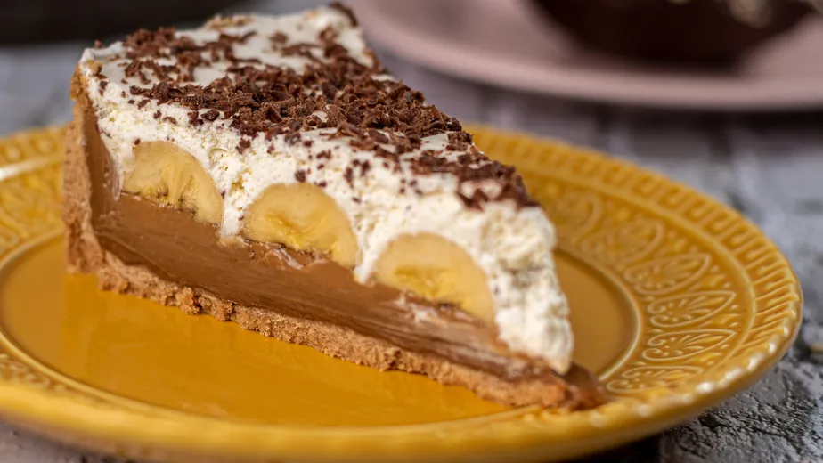

A banoffee é uma torta inglesa irresistível, com uma base de biscoito, um recheio cremoso de doce de leite, fatias de banana e uma generosa cobertura de chantilly. É a sobremesa perfeita para qualquer ocasião!
 Imagem ilustrativa de uma banoffee.Ingredientes
- 200g de biscoito maisena (ou similar)
- 100g de manteiga sem sal derretida
- 1 lata de doce de leite (cozido por 40 minutos na pressão ou pronto)
- 3 a 4 bananas nanicas maduras
- 500ml de creme de leite fresco gelado
- 3 colheres de sopa de açúcar (para o chantilly)
- Chocolate em pó ou raspas de chocolate para decorar (opcional)
Modo de Preparo
-
Prepare a base:
Triture os biscoitos até virarem uma farofa fina. Misture com a manteiga derretida até formar uma massa homogênea. Forre o fundo e as laterais de uma forma de fundo removível (aprox. 24cm de diâmetro), pressionando bem. Leve à geladeira por 30 minutos enquanto prepara o restante.
-
Montagem:
Espalhe o doce de leite sobre a base de biscoito já firme. Corte as bananas em rodelas e distribua-as sobre o doce de leite.
-
Faça o chantilly:
Em uma batedeira, bata o creme de leite fresco bem gelado com o açúcar até obter um chantilly firme.
-
Finalize:
Cubra a torta com o chantilly. Se desejar, decore com chocolate em pó peneirado ou raspas de chocolate. Leve à geladeira por pelo menos 2 horas antes de servir para firmar bem.
Dicas extras
- Para um doce de leite caseiro, retire o rótulo da lata de leite condensado e cozinhe na panela de pressão por 40 minutos após o início da pressão. Deixe esfriar completamente antes de abrir.
- Use bananas não muito maduras para que não fiquem moles na torta.
- Para o chantilly, certifique-se de que o creme de leite esteja bem gelado, isso facilita o ponto.